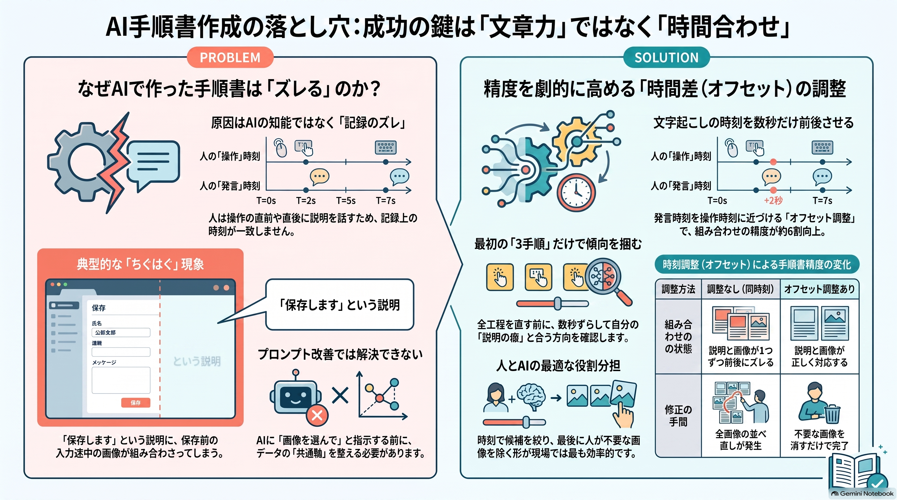

Work Manual Creation Tool
作業手順の文字起こしとPC操作中のスクリーンショットを組み合わせ、説明と画像の時間差を調整しながら手順書の下書きを作る支援ツールです。

解決したい課題
- 業務を説明しながら、同時に手順書を作る負担が大きい。
- 文字起こしとスクリーンショットは取得できても、説明と画面の状態が少しずつずれる。
- 手順が増えるほど、画像を一枚ずつ並べ直す修正作業も増えてしまう。
ツールのアプローチ
- 発言内容と発言時刻、操作時のスクリーンショットと撮影時刻を共通の時間軸で整理。
- 文字起こしの時刻を数秒前後へ動かす「オフセット調整」で、説明に近い画像候補を絞り込む。
- AIにすべてを判断させず、候補抽出を自動化し、最後の画像選択は人が短時間で行う。
主な機能
- 文字起こしデータと操作スクリーンショットの読み込み。
- 発言時刻と撮影時刻を使った説明文・画像候補の対応づけ。
- 画面上から時間差を変更し、組み合わせ結果を比較できるオフセット調整。
- 説明文と画像を並べた手順書の下書き生成。
試作から得られたこと
- モデルやプロンプトを変えなくても、入力データの時計を合わせるだけで対応精度を改善できた。
- 記録量を増やすだけでは、画面移動や入力途中など不要な画像も増える。
- 完全自動化よりも、時刻で候補を絞り、人が最終判断する分担が現場では扱いやすい。